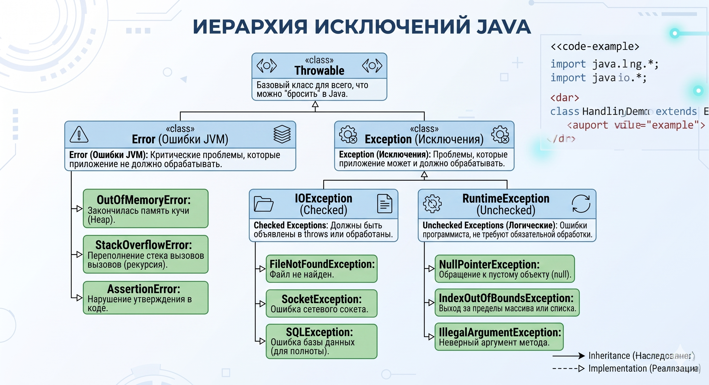

Исключения¶
Иерархия исключений (exceptions), checked против unchecked, try-catch-finally, try-with-resources, свои исключения и антипаттерны. Чаще всего спрашивают разницу между checked и unchecked, когда не выполняется finally и почему в Spring принято бросать RuntimeException.
Иерархия¶
Как устроена иерархия исключений?¶
Уровень: Junior
Ответ вслух
Всё начинается с Throwable — базового класса для всего, что можно бросить и поймать. От него две ветки: Error — критические сбои JVM, которые приложение обрабатывать не должно, и Exception — проблемы, которые можно и нужно обрабатывать. RuntimeException — особая ветка внутри Exception: это непроверяемые исключения.

Вся иерархия исключений в Java начинается с класса Throwable — базового для всего, что можно бросить (throw) и поймать (catch). От него отходят две принципиально разные ветки.
Error — ошибки JVM¶
Error — критические проблемы на уровне JVM или ОС, которые приложение не должно пытаться обработать. Когда возникает Error, JVM сигнализирует: «нормально продолжать работу я не могу». Ловить их через try-catch — плохая практика. Типичные представители:
OutOfMemoryError— закончилась память. Подробно — в Память и сборка мусора → OutOfMemoryError.StackOverflowError— переполнение стека вызовов (бесконечная рекурсия).AssertionError— нарушено утверждениеassertв коде.
Exception — наша зона ответственности¶
Exception — проблемы, которые приложение может и должно обрабатывать. Они делятся на два лагеря — checked и unchecked, и разница между ними — один из самых частых вопросов на собесах.
try {
Integer.parseInt(input);
} catch (NumberFormatException e) { // ✅ конкретное исключение, которое умеем обработать
System.out.println("Неверные данные: " + e.getMessage());
}
// catch (Throwable t) { ... } // ❌ так поймаешь и Error — например, OutOfMemoryError
Ловушка: catch (Throwable t)
Такой блок ловит и Error, включая OutOfMemoryError и StackOverflowError, после которых состояние JVM непредсказуемо. Ловить Throwable оправдано только на самой верхней границе — например, чтобы залогировать падение потока.
Проверь себя
- От какого класса наследуются все исключения?
- Чем
Errorотличается отException? - Почему
catch (Throwable t)— плохая идея?
Чем checked-исключения отличаются от unchecked?¶
Уровень: Junior
Ответ вслух
Checked — наследники Exception, кроме RuntimeException: компилятор требует их поймать или объявить в throws, это ожидаемые внешние проблемы вроде отсутствующего файла. Unchecked — наследники RuntimeException: обработку компилятор не требует, это обычно баги в логике — null, неверный аргумент, выход за границы.
Checked exceptions (проверяемые)¶
Наследники Exception, кроме RuntimeException и его потомков.
- Правило: компилятор принудительно требует обработки. Если метод может бросить checked exception, ты обязан либо обернуть вызов в
try-catch, либо объявить исключение в сигнатуре черезthrows. - Философия: это ожидаемые внешние проблемы, которые случаются не из-за бага в коде, а из-за внешнего мира. Файла может не быть, сеть может упасть, база может быть недоступна. Java предупреждает заранее: «подумай, что делать в этой ситуации».
Типичные представители:
FileNotFoundException— файл не найден (веткаIOException).SocketException— ошибка сетевого соединения (веткаIOException).SQLException— ошибка при работе с базой данных. Это не потомокIOException:SQLExceptionнаследуется напрямую отException.
// Компилятор не пустит без try-catch или throws
public void readFile(String path) throws IOException {
FileReader reader = new FileReader(path); // бросает FileNotFoundException
}
Unchecked exceptions (непроверяемые)¶
Наследники RuntimeException.
- Правило: компилятор не требует обработки. Ловить их можно, но не обязательно.
- Философия: это ошибки программиста — баги в логике, которых не должно быть в нормальном коде: обращение к
null, выход за пределы массива, неверный аргумент. Компилятор не может предусмотреть все такие случаи.
Типичные представители:
NullPointerException— обращение кnull-ссылке.IndexOutOfBoundsException— выход за пределы массива или списка.IllegalArgumentException— методу передан некорректный аргумент.IllegalStateException— метод вызван в неподходящем состоянии объекта.ClassCastException— некорректное приведение типов.ArithmeticException— например, целочисленное деление на ноль.
| Error | Checked Exception | Unchecked Exception | |
|---|---|---|---|
| Базовый класс | Error |
Exception (не RuntimeException) |
RuntimeException |
| Причина | Критический сбой JVM или ОС | Ожидаемая внешняя проблема | Баг в логике |
| Компилятор требует обработки | ❌ Нет | ✅ Да | ❌ Нет |
Ловить через catch |
Крайне редко | Да, обязательно | По необходимости |
| Примеры | OutOfMemoryError, StackOverflowError |
IOException, SQLException |
NPE, IndexOutOfBoundsException |
Ловушка: catch (Exception e) ловит и unchecked
RuntimeException — наследник Exception. Поэтому catch (Exception e) поймает и NullPointerException, и IllegalArgumentException — вместе с багами, которые лучше бы упали громко.
Проверь себя
- Как по иерархии отличить checked-исключение от unchecked?
- Что компилятор требует сделать с checked-исключением?
- Наследует ли
SQLExceptionклассIOException?
Обработка¶
Как работает try-catch-finally?¶
Уровень: Junior
Ответ вслух
В try — код, который может бросить исключение, в catch — обработка конкретных типов, в finally — код, который выполнится и при ошибке, и без неё. catch-блоки проверяются сверху вниз, поэтому частные исключения пишут раньше общих. Несколько несвязанных типов можно поймать одним catch (A | B e).
try {
// код, который может бросить исключение
String content = readFile("data.txt");
} catch (FileNotFoundException e) {
// конкретная ошибка — обрабатываем первой
log.error("Файл не найден: {}", e.getMessage());
} catch (IOException e) {
// более широкая ошибка — обрабатываем второй
log.error("Ошибка чтения: {}", e.getMessage());
} finally {
// выполнится и при ошибке, и без неё
closeResources();
}
С Java 7 несколько несвязанных исключений можно обработать одним блоком (multi-catch):
try {
Object plugin = Class.forName("com.example.Plugin").getDeclaredConstructor().newInstance();
} catch (ClassNotFoundException | NoSuchMethodException e) { // одна обработка для двух типов
log.error("Плагин не найден", e);
} catch (ReflectiveOperationException e) {
log.error("Не удалось создать плагин", e);
}
Ловушка: порядок catch имеет значение
Частные (дочерние) исключения должны идти перед общими (родительскими). Если поставить catch (IOException e) перед catch (FileNotFoundException e), код не скомпилируется: второй блок недостижим.
Проверь себя
- В каком порядке проверяются
catch-блоки? - Что будет, если поставить
catch (IOException e)раньшеcatch (FileNotFoundException e)? - Как поймать два несвязанных исключения одним блоком?
Когда finally не выполняется?¶
Уровень: Middle
Ответ вслух
Почти никогда. finally не выполнится, если вызвать System.exit(), если процесс JVM умер — упала сама JVM или её убили через kill -9, — и если try никогда не завершится. При OutOfMemoryError finally выполняется — это обычный Throwable.
finally выполняется почти всегда: и при исключении, и при нормальном завершении, даже если в try или catch стоит return — JVM сначала выполнит finally и только потом выйдет из метода. Любимый вопрос-засыпка — когда это не так:
- Если вызвать
System.exit(0)— JVM завершается, не возвращаясь из вызова. - Если процесс JVM умер: падение самой JVM (crash),
kill -9, отключение питания. - Если
tryникогда не завершится — бесконечный цикл внутри.
static int compute() {
try {
return 1;
} finally {
System.out.println("finally выполнится до выхода из метода");
}
}
static int swallow() {
try {
throw new IllegalStateException("потеряется");
} finally {
return 2; // ❌ return в finally молча проглатывает исключение из try
}
}
Частая ошибка: OutOfMemoryError
При OutOfMemoryError finally выполняется. Это обычный Error — он летит вверх по стеку, как любое исключение, и по пути отрабатывают все finally. Так же finally отрабатывал при Thread.stop(): тот бросал в потоке ThreadDeath (а с Java 20 метод и вовсе кидает UnsupportedOperationException).
Ловушка: return внутри finally
return в finally перебивает и результат try, и брошенное в try исключение: метод swallow() выше вернёт 2, а IllegalStateException бесследно исчезнет. В finally не пишут return и не бросают исключений.
Проверь себя
- В каких трёх случаях
finallyне выполняется? - Выполнится ли
finallyприOutOfMemoryError? - Что вернёт метод с
returnвfinally, если вtryбыло брошено исключение?
Что даёт try-with-resources?¶
Уровень: Middle
Ответ вслух
Это конструкция Java 7, которая сама вызывает close() у всех ресурсов, реализующих AutoCloseable, в обратном порядке, даже при исключении. Если упадёт и тело, и close(), исключение из close() не перетрёт основное, а добавится к нему как suppressed. В современном коде finally для закрытия ресурсов — антипаттерн.
Вместо ручного закрытия ресурсов в finally используй try-with-resources. Он автоматически вызывает close() у всех ресурсов, которые реализуют AutoCloseable.
// ❌ Старый способ — многословный и опасный (можно забыть закрыть)
FileReader reader = null;
try {
reader = new FileReader("data.txt");
// ...
} finally {
if (reader != null) reader.close(); // close() тоже может бросить — и перетереть исходную ошибку
}
// ✅ Современный способ — коротко и безопасно
try (FileReader fileReader = new FileReader("data.txt");
BufferedReader br = new BufferedReader(fileReader)) {
String line = br.readLine();
// fileReader и br закроются автоматически в обратном порядке
}
Главный выигрыш — suppressed-исключения. В старом коде, если упало и тело, и close() в finally, наружу улетит ошибка из close(), а исходная потеряется. try-with-resources сохранит исходную и прикрепит к ней ошибку закрытия:
class Resource implements AutoCloseable {
@Override
public void close() {
throw new IllegalStateException("ошибка при закрытии");
}
}
try (Resource r = new Resource()) {
throw new RuntimeException("основная ошибка");
} catch (RuntimeException e) {
System.out.println(e.getMessage()); // основная ошибка
System.out.println(e.getSuppressed()[0].getMessage()); // ошибка при закрытии
}
Правило
В современном коде finally для закрытия ресурсов — антипаттерн. Всегда используй try-with-resources.
Ловушка: ресурс без AutoCloseable
В try (...) можно объявлять только объекты, реализующие AutoCloseable (или Closeable). Свой класс-ресурс, который нужно закрывать, должен реализовать этот интерфейс — иначе код не скомпилируется.
Проверь себя
- Какой интерфейс должен реализовать ресурс для
try-with-resources? - В каком порядке закрываются ресурсы?
- Что такое suppressed-исключение и чем оно лучше поведения ручного
finally?
Свои исключения¶
Когда создавать свои исключения и какие — checked или unchecked?¶
Уровень: Middle
Ответ вслух
Свои исключения нужны, чтобы нести доменный смысл, добавить контекст вроде orderId и не пропускать инфраструктурные ошибки между слоями. Checked — когда вызывающий код обязан обработать ситуацию, unchecked — для багов и неожиданных состояний. В Spring-приложениях почти всегда выбирают unchecked.
Свои исключения нужны, когда хочешь:
- Нести доменный смысл —
OrderNotFoundExceptionговорит больше, чемRuntimeException("Order not found"). - Добавить контекст — передать
orderId,userIdи другие данные для логирования. - Разграничить слои — не пропускать
SQLExceptionиз репозитория в контроллер.
// Checked — если вызывающий код ОБЯЗАН обработать этот случай
public class InsufficientFundsException extends Exception {
private final BigDecimal required;
private final BigDecimal available;
public InsufficientFundsException(BigDecimal required, BigDecimal available) {
super("Недостаточно средств: требуется %s, доступно %s"
.formatted(required, available));
this.required = required;
this.available = available;
}
public BigDecimal getRequired() { return required; }
public BigDecimal getAvailable() { return available; }
}
// Unchecked — если это баг или неожиданное состояние (Spring-стиль)
public class OrderNotFoundException extends RuntimeException {
public OrderNotFoundException(Long orderId) {
super("Заказ не найден: id=" + orderId);
}
}
Правило в Spring-приложениях
В Spring принято использовать unchecked исключения. Это убирает «шум» в сигнатурах методов и бесполезные throws на каждом уровне стека. Checked-исключения из JDK (вроде IOException) оборачиваются в unchecked на границе инфраструктурного слоя.
Как превратить такие исключения в HTTP-ответы через @RestControllerAdvice и @ExceptionHandler — в Spring MVC → Обработка исключений.
Ловушка: checked-исключение и @Transactional
По умолчанию Spring откатывает транзакцию только при unchecked-исключениях. Если сервис бросит checked InsufficientFundsException, транзакция закоммитится — нужен @Transactional(rollbackFor = Exception.class). Подробно — в Spring Data JPA.
Проверь себя
- Зачем создавать свои исключения вместо
RuntimeException("...")? - Когда своё исключение стоит сделать checked, а когда — unchecked?
- Почему в Spring-приложениях предпочитают unchecked-исключения?
Какие антипаттерны встречаются при работе с исключениями?¶
Уровень: Middle
Ответ вслух
Три главных: проглотить исключение пустым catch, залогировать и тут же пробросить — получив два стектрейса об одной ошибке, — и ловить Exception или Throwable без причины. Правильно — ловить конкретный тип, логировать один раз и оборачивать с контекстом, не теряя cause.
// ❌ Глотать исключение — худший грех
void swallow() {
try {
riskyOperation();
} catch (Exception e) {
// ничего не делаем — баг навсегда скрыт
}
}
// ❌ Логировать И пробрасывать — дублирование в логах
void logAndRethrow() throws Exception {
try {
riskyOperation();
} catch (Exception e) {
log.error("Ошибка", e);
throw e; // в логах будет два стектрейса об одной ошибке
}
}
// ❌ Ловить Exception или Throwable без причины — слишком широко, ловим всё подряд
void catchAll() {
try {
riskyOperation();
} catch (Exception e) {
log.warn("что-то пошло не так");
}
}
// ✅ Ловить конкретное, логировать один раз, пробрасывать с контекстом
void wrap(Path path) {
try {
Files.readString(path);
} catch (IOException e) {
throw new FileProcessingException("Не удалось обработать файл: " + path, e);
}
}
Никогда не теряй cause
При оборачивании исключения всегда передавай оригинал вторым аргументом: new MyException("message", originalException). Иначе теряется стектрейс — и отладка превращается в детективное расследование.
Проверь себя
- Почему пустой
catch— худший антипаттерн? - Что плохого в том, чтобы залогировать исключение и пробросить его дальше?
- Как правильно обернуть checked-исключение в unchecked?
Шпаргалка¶
| Тема | Запомнить |
|---|---|
| Иерархия | Throwable → Error (не трогаем) и Exception (обрабатываем) |
| Checked | Наследники Exception кроме RuntimeException; компилятор требует catch или throws |
| Unchecked | Наследники RuntimeException; обычно баги в логике |
SQLException |
Checked, наследует Exception напрямую, а не IOException |
Порядок catch |
Сначала частные, потом общие; multi-catch A \| B с Java 7 |
finally |
Не выполнится при System.exit, смерти процесса, бесконечном try; при OOM — выполнится |
return в finally |
Проглатывает исключение из try — так не пишут |
try-with-resources |
AutoCloseable, закрытие в обратном порядке, suppressed-исключения |
| Свои исключения | Доменный смысл и контекст; в Spring — unchecked |
| Антипаттерны | Пустой catch, лог + проброс, ловля Exception без причины, потерянный cause |
| Spring | @RestControllerAdvice и @ExceptionHandler — в Spring MVC |